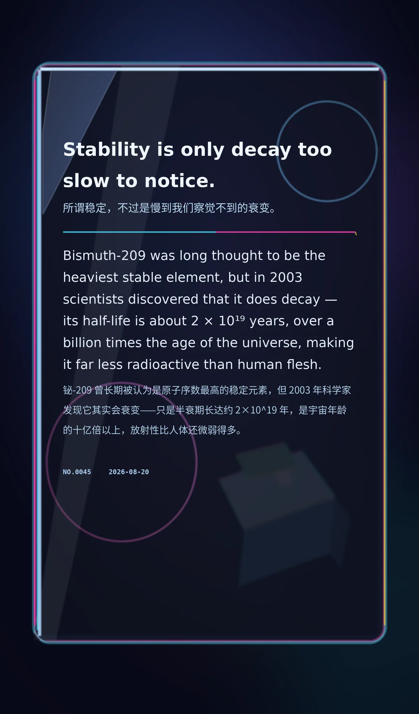

Stability is only decay too slow to notice.（所谓稳定，不过是慢到我们察觉不到的衰变。）
Bismuth-209 was long thought to be the heaviest stable element, but in 2003 scientists discovered that it does decay — its half-life is about 2 × 10¹⁹ years, over a billion times the age of the universe, making it far less radioactive than human flesh.（铋-209 曾长期被认为是原子序数最高的稳定元素，但 2003 年科学家发现它其实会衰变——只是半衰期长达约 2×10¹⁹ 年，是宇宙年龄的十亿倍以上，放射性比人体还微弱得多。）